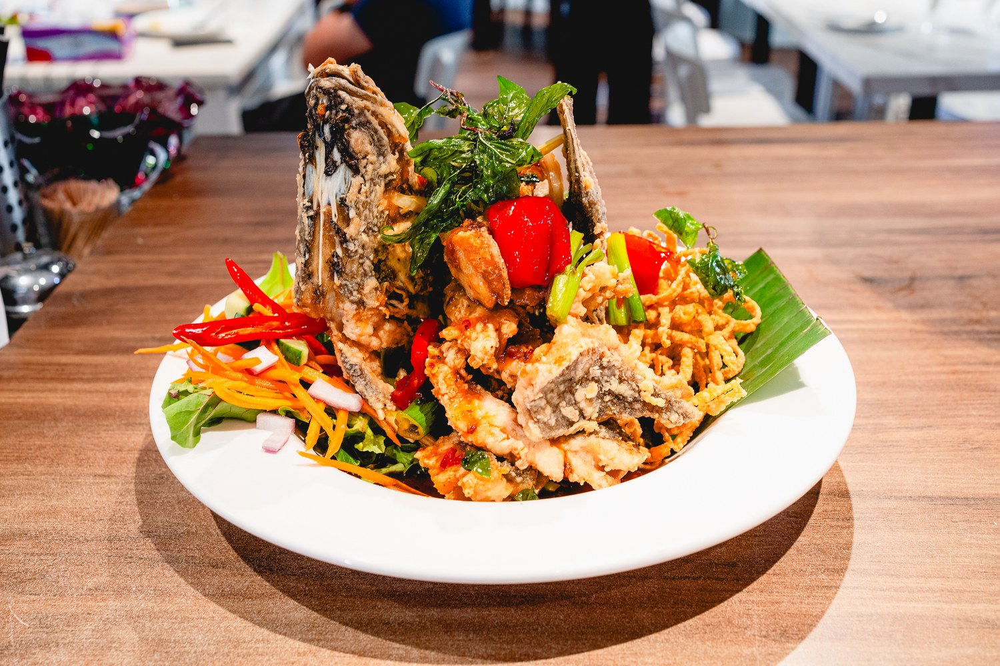
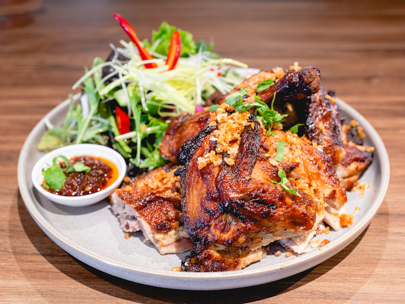

YOUR CHOICES · A LITTLE SPONTANEITY
A little help
choosing.
Thai favourites, tonight’s plans or your own ideas. Put them on the wheel and leave room for a happy surprise.
Keep exploring
YOUR CHOICES. YOUR WHEEL.
Your wheel is a blank canvas.
THE WHEEL HAS SPOKEN
MAKE IT YOURS
What are your options?
Add food, things to do, places to go—or anything else. You can mix in dishes from Marko’s too.
OR ADD FROM MARKO’S
Your wheel 0 choices
No choices yet. Your first idea goes here.
LEAVE IT TO MARKO’S52 mains.
52 mains.
One happy decision.
Spin for a dish from our menu, or bring the whole list into your own wheel and make it yours.

See the full menu ↗Every choice gets an equal slice. Ask our team about availability and dietary needs before ordering.